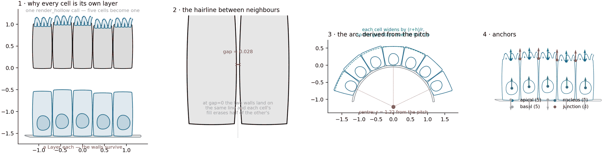
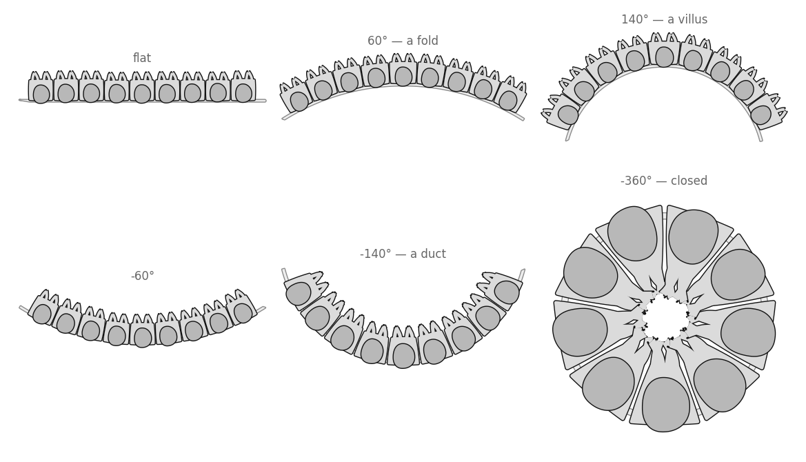
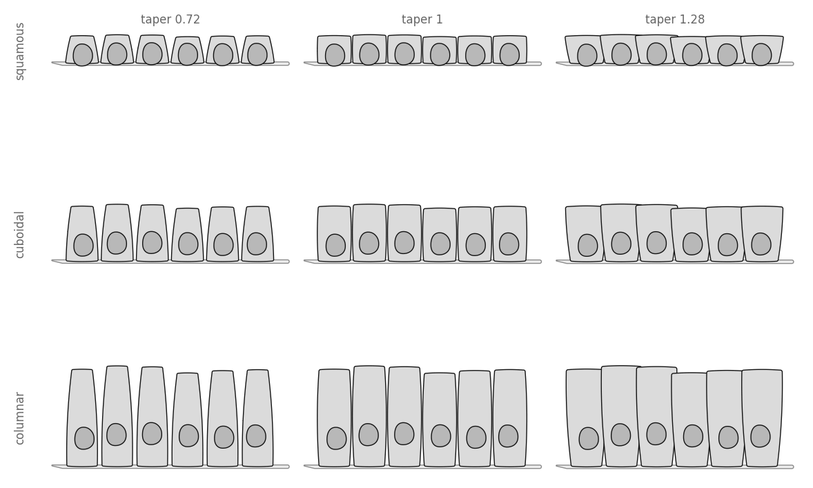
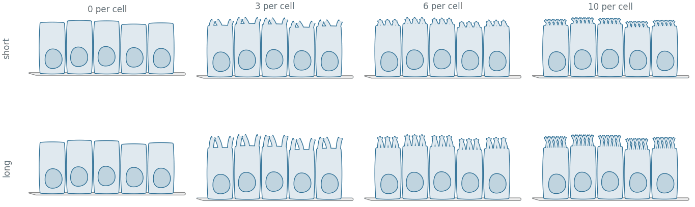

All examples Cells & tissues
Epithelial sheet
A row of cells standing on a basement membrane — many cells that must not become one.
cells.Sheetshape.Layer

Where the generic cell is one cell that is not one contour, this is many cells that must not become one.
How it is built

- Why every cell is its own layer. One union dissolves every shared wall into one long cell.
- The hairline between neighbours.
gapis real page. At zero, each cell's second pass erases half the other's wall. - The arc, derived from the pitch. One cell subtends one pitch angle, so
-360closes exactly at any count. - Anchors. Apical and basal per cell, one nucleus, one junction at the apical end of each shared wall.
| anchor | where | count on a 6-cell row |
|---|---|---|
apical | middle of each apical surface, pointing out | 6 |
basal | middle of each basal surface, pointing down | 6 |
nucleus | one per nucleus | 6 |
junction | the apical end of each shared wall — one per cell on a closed ring | 5 |
Drawing one
import biodraw as bd
sheet = bd.cells.Sheet(
cells=6, # how many, side by side
cell_w=0.46, # the pitch, at the basal line
height=1.0, # basal surface to apical surface
gap=0.06, # page left between neighbours, x cell_w
nucleus=0.30, # nuclear semi-axis, x cell_w
nucleus_at=0.32, # basal — the cheapest cue that the sheet has a polarity
nucleus_jitter=0.05, # ...because a row of identical cells is a row of copies
height_jitter=0.04, # and a level apical surface is the first thing the eye finds
microvilli=5, # brush border, per cell
curve_deg=0, # -360 closes into a ring; refuses if height will not fit
basement=True, # the band the sheet stands on
seed=1, # fixes both jitters — still byte-identical on rebuild
)
fig, ax = bd.canvas(figsize=(4.4, 2.6))
sheet.draw(
ax=ax,
wall_lw=1.0, # wall thickness, in points
gid="epithelium", # names the layers in the exported SVG
)
sheet.fit(ax, pad=0.10)
bd.save(fig, "epithelium.svg")
lumen_side = sheet.anchor("apical", cell=2)Curvature

Cell shapes

Brush border

Every figure above is output, not a stored asset — the full script that draws them.